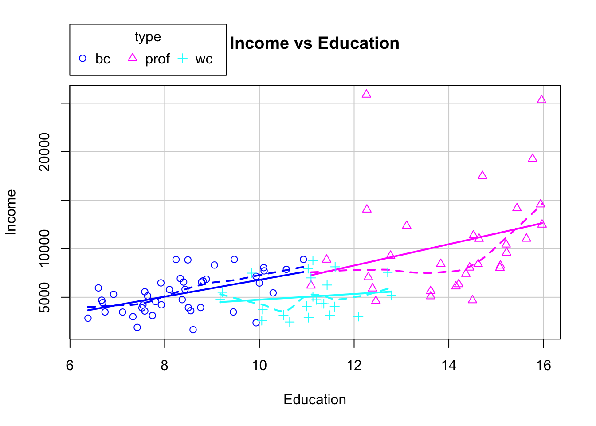

Multiple Regression Model
Donghyung Lee
2019-11-15
Last updated: 2019-11-15
Checks: 7 0
Knit directory: STA_463_563_Fall2019/
This reproducible R Markdown analysis was created with workflowr (version 1.4.0). The Checks tab describes the reproducibility checks that were applied when the results were created. The Past versions tab lists the development history.
Great! Since the R Markdown file has been committed to the Git repository, you know the exact version of the code that produced these results.
Great job! The global environment was empty. Objects defined in the global environment can affect the analysis in your R Markdown file in unknown ways. For reproduciblity it’s best to always run the code in an empty environment.
The command set.seed(20190905) was run prior to running the code in the R Markdown file. Setting a seed ensures that any results that rely on randomness, e.g. subsampling or permutations, are reproducible.
Great job! Recording the operating system, R version, and package versions is critical for reproducibility.
Nice! There were no cached chunks for this analysis, so you can be confident that you successfully produced the results during this run.
Great job! Using relative paths to the files within your workflowr project makes it easier to run your code on other machines.
Great! You are using Git for version control. Tracking code development and connecting the code version to the results is critical for reproducibility. The version displayed above was the version of the Git repository at the time these results were generated.
Note that you need to be careful to ensure that all relevant files for the analysis have been committed to Git prior to generating the results (you can use wflow_publish or wflow_git_commit). workflowr only checks the R Markdown file, but you know if there are other scripts or data files that it depends on. Below is the status of the Git repository when the results were generated:
Ignored files:
Ignored: .DS_Store
Ignored: .Rhistory
Ignored: .Rproj.user/
Ignored: analysis/.DS_Store
Untracked files:
Untracked: docs/figure/fit_mr.Rmd/
Note that any generated files, e.g. HTML, png, CSS, etc., are not included in this status report because it is ok for generated content to have uncommitted changes.
These are the previous versions of the R Markdown and HTML files. If you’ve configured a remote Git repository (see ?wflow_git_remote), click on the hyperlinks in the table below to view them.
| File | Version | Author | Date | Message |
|---|---|---|---|---|
| Rmd | 2bac0d3 | dleelab | 2019-11-15 | created |
Fit model with transformed predictor/response
Plastic hardness data, fit \(Y=\beta_0+\beta_1X+\epsilon\).
plastic=read.table("http://users.stat.ufl.edu/~rrandles/sta4210/Rclassnotes/data/textdatasets/KutnerData/Chapter%20%201%20Data%20Sets/CH01PR22.txt")
colnames(plastic)=c("Y","X")
lm(Y~X,data=plastic)
Call:
lm(formula = Y ~ X, data = plastic)
Coefficients:
(Intercept) X
168.600 2.034 lm(Y~X^2,data=plastic)
Call:
lm(formula = Y ~ X^2, data = plastic)
Coefficients:
(Intercept) X
168.600 2.034 What’s wrong with the above result?
Solutions:
Y2=(plastic$Y)^2
X2=(plastic$X)^2
lm(Y~X2,data=plastic)
Call:
lm(formula = Y ~ X2, data = plastic)
Coefficients:
(Intercept) X2
194.88253 0.03551 lm(Y~I(X^2),data=plastic)
Call:
lm(formula = Y ~ I(X^2), data = plastic)
Coefficients:
(Intercept) I(X^2)
194.88253 0.03551 Multiple Regression Fit (Lecture 13)
1. Data: The Prestige data frame is the Prestige of Canadian Occupations. It has 102 rows and 6 columns. The observations are occupations. First of all, we remove all observations that have missing values for varaible ``type’’.
#install.packages("car")
library(car)Loading required package: carData#?Prestige
mydata=Prestige[!is.na(Prestige$type), ]#remove the observations with missing values for "type"
unique(mydata$type)[1] prof bc wc
Levels: bc prof wcTo have an idea about the predictor variable and the response, we can view the enhanced scatterplot.
scatterplot(income~education|type, data=mydata,ylab="Income",
xlab="Education",main="Income vs Education") Based on the plot, maybe there’s linear relationsihp between education and income. It seems the intercept of bc and prof are similar, different from that of the wc. We also want know whether the slope of the three groups are different (whether interaction term is necessary).
Alternative method using the ggplot:
library(ggplot2)
ggplot(data=mydata, aes(x=education, y=income)) +
geom_point(aes(colour = factor(type))) +
geom_smooth(aes(colour = factor(type)))`geom_smooth()` using method = 'loess' and formula 'y ~ x'
2. Generate the design matrix
X=model.matrix(~type,data=mydata)
#X
Y=as.matrix(mydata$income)
solve(t(X)%*%X)%*%t(X)%*%Y [,1]
(Intercept) 5374.136
typeprof 5185.315
typewc -321.832lm(income~type,data=mydata)#automatically, bc is the reference group.
Call:
lm(formula = income ~ type, data = mydata)
Coefficients:
(Intercept) typeprof typewc
5374.1 5185.3 -321.8 3. Mix continuous and categorical variable.
(1) Use income as response, education and type as predictor.
X=model.matrix(~education+type,data=mydata)
#X
Y=as.matrix(mydata$income)
solve(t(X)%*%X)%*%t(X)%*%Y [,1]
(Intercept) -2048.2080
education 887.9126
typeprof 102.1260
typewc -2685.8293lm(income~education+type,data=mydata)
Call:
lm(formula = income ~ education + type, data = mydata)
Coefficients:
(Intercept) education typeprof typewc
-2048.2 887.9 102.1 -2685.8 #If the data is in letters, R recognize it as a categorical factor.(2) If you don’t like bc be reference group, change it to wc.
new=relevel(mydata$type,ref="wc")
X=model.matrix(~education+new,data=mydata)
Y=as.matrix(mydata$income)
solve(t(X)%*%X)%*%t(X)%*%Y [,1]
(Intercept) -4734.0372
education 887.9126
newbc 2685.8293
newprof 2787.9553lm(income~education+new,data=mydata)
Call:
lm(formula = income ~ education + new, data = mydata)
Coefficients:
(Intercept) education newbc newprof
-4734.0 887.9 2685.8 2788.0 (3) Like constructing a linear regression model, you may also include interaction terms
X=model.matrix(~education+type+education*type,data=mydata)
Y=as.matrix(mydata$income)
solve(t(X)%*%X)%*%t(X)%*%Y [,1]
(Intercept) -1865.0362
education 866.0004
typeprof -3068.3645
typewc 3646.5441
education:typeprof 234.0166
education:typewc -569.2417lm(income~education+type+education*type,data=mydata)
Call:
lm(formula = income ~ education + type + education * type, data = mydata)
Coefficients:
(Intercept) education typeprof
-1865.0 866.0 -3068.4
typewc education:typeprof education:typewc
3646.5 234.0 -569.2 4. What if you want a categorical variable, but it’s coded in 1,2,3, etc.
(1) Directly use it, R will recognize it as numeric variable.
mydata2=cbind(mydata,c(rep(1,40),rep(2,38),rep(3,20)))
colnames(mydata2)[7]=c("group")
#mydata2
lm(income~group,data=mydata2)
Call:
lm(formula = income ~ group, data = mydata2)
Coefficients:
(Intercept) group
9889 -1643 (2) We can manually let R know it’s a categorical variable.
mydata2$group=factor(mydata2$group)
lm(income~group,data=mydata2)
Call:
lm(formula = income ~ group, data = mydata2)
Coefficients:
(Intercept) group2 group3
8891 -3643 -2641 #alternative way
groupf=factor(mydata2$group)
lm(income~groupf,data=mydata2)
Call:
lm(formula = income ~ groupf, data = mydata2)
Coefficients:
(Intercept) groupf2 groupf3
8891 -3643 -2641 #alternative way
lm(income~factor(group),data=mydata2)
Call:
lm(formula = income ~ factor(group), data = mydata2)
Coefficients:
(Intercept) factor(group)2 factor(group)3
8891 -3643 -2641
sessionInfo()R version 3.6.1 (2019-07-05)
Platform: x86_64-apple-darwin15.6.0 (64-bit)
Running under: macOS Mojave 10.14.6
Matrix products: default
BLAS: /Library/Frameworks/R.framework/Versions/3.6/Resources/lib/libRblas.0.dylib
LAPACK: /Library/Frameworks/R.framework/Versions/3.6/Resources/lib/libRlapack.dylib
locale:
[1] en_US.UTF-8/en_US.UTF-8/en_US.UTF-8/C/en_US.UTF-8/en_US.UTF-8
attached base packages:
[1] stats graphics grDevices utils datasets methods base
other attached packages:
[1] ggplot2_3.2.1 car_3.0-4 carData_3.0-2
loaded via a namespace (and not attached):
[1] zip_2.0.4 Rcpp_1.0.2 compiler_3.6.1
[4] pillar_1.4.2 cellranger_1.1.0 git2r_0.26.1
[7] workflowr_1.4.0 forcats_0.4.0 tools_3.6.1
[10] zeallot_0.1.0 digest_0.6.20 gtable_0.3.0
[13] evaluate_0.14 tibble_2.1.3 pkgconfig_2.0.2
[16] rlang_0.4.0 openxlsx_4.1.3 curl_4.0
[19] yaml_2.2.0 haven_2.1.1 xfun_0.9
[22] rio_0.5.16 withr_2.1.2 dplyr_0.8.3
[25] stringr_1.4.0 knitr_1.24 fs_1.3.1
[28] vctrs_0.2.0 hms_0.5.1 tidyselect_0.2.5
[31] rprojroot_1.3-2 grid_3.6.1 glue_1.3.1
[34] data.table_1.12.2 R6_2.4.0 readxl_1.3.1
[37] foreign_0.8-71 rmarkdown_1.15 purrr_0.3.2
[40] magrittr_1.5 whisker_0.3-2 scales_1.0.0
[43] backports_1.1.4 htmltools_0.3.6 assertthat_0.2.1
[46] abind_1.4-5 colorspace_1.4-1 labeling_0.3
[49] stringi_1.4.3 lazyeval_0.2.2 munsell_0.5.0
[52] crayon_1.3.4